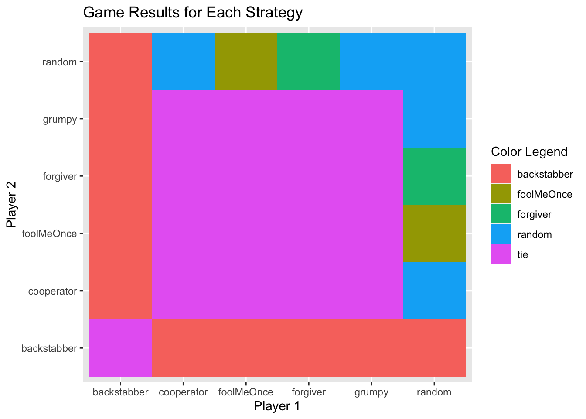
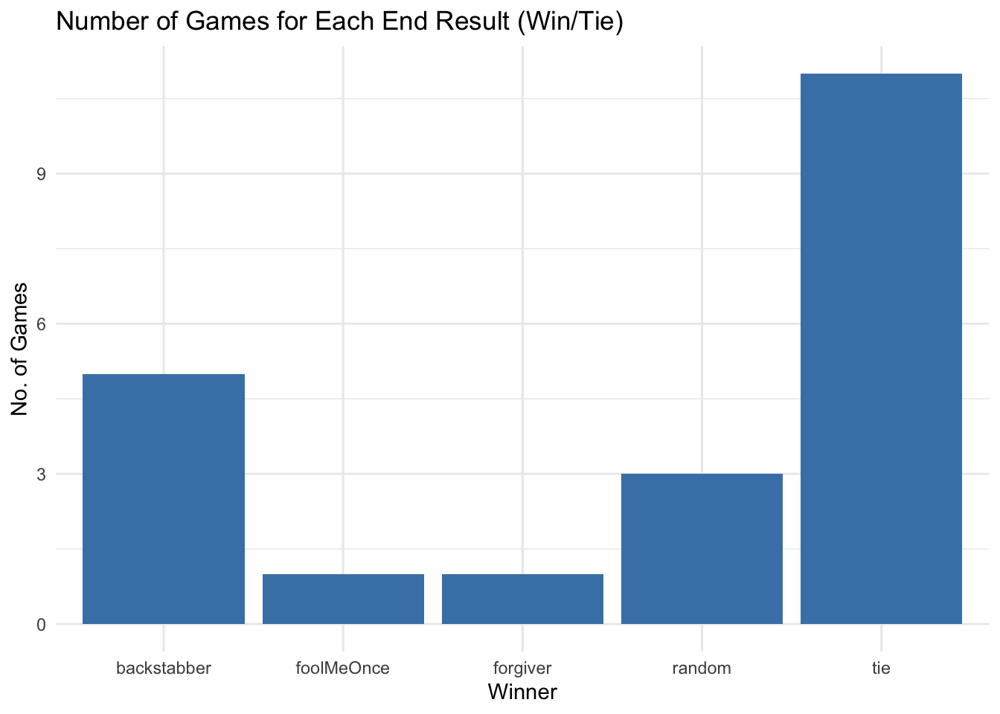
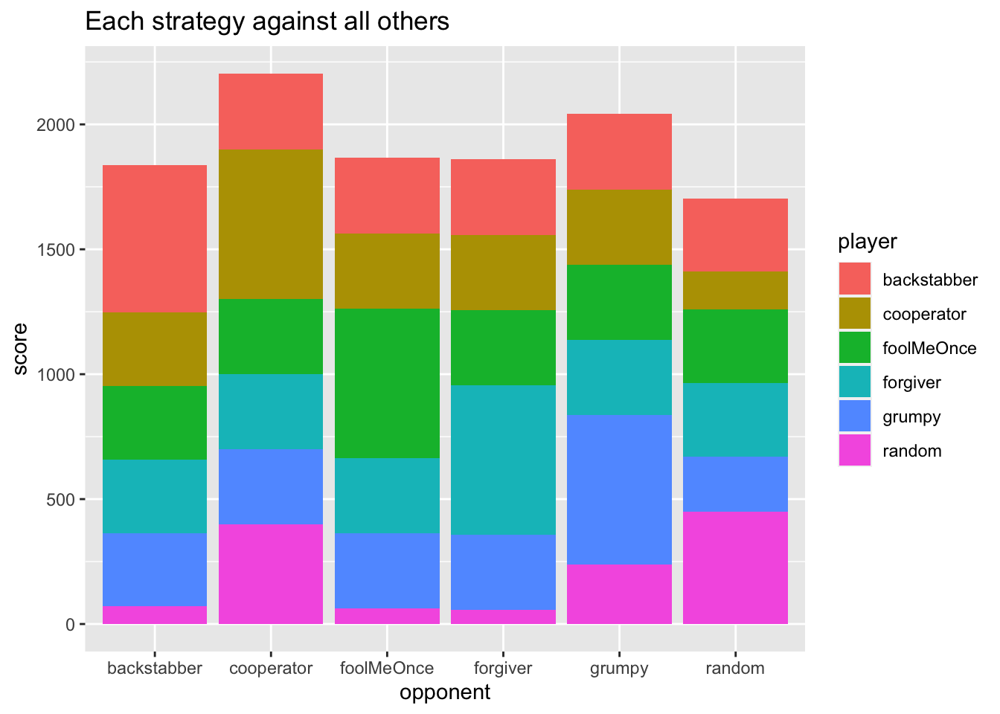

on
Week 2: Natural Selection and the Political Mind
Introduction
In this week’s blog, I look at decision making and the way in which cooperation occurs between two parties. The importance of cooperation can be traced through an evolutionary lens. According to Axelrod, “Many of the benefits sought by living things are disproportionately available to cooperating groups” (pg. 92). Axelrod is asserting that psychological traits favoring cooperation were favored through natural selection, indicating humans today should lean toward cooperation when possible. However, despite these traits, cooperation often fails to prevail in situations, often those resembling the “Prisoners’ Dilemma”.
Axelrod and the Prisoners’ Dilemma
In the Prisoners’ Dilemma, two players have the option to either cooperate or defect. The possible outcomes can be visualized in the grid below:
When both players cooperate, there is a win-win scenario. If player 1 cooperates and player 2 defects, player 1 wins big, and vice-verse. This type of framework can be applied to numerous social dilemmas, such as voting. If everyone votes, then each person has the opportunity for their beliefs to be represented. If a person does not vote, they have no representation, and other people’s vote can have more likelihood of influence. If no one votes, then representation is lacking for everyone.
Cooperation leads a to favorable outcome for both, but defecting can be more appealing. Axelrod explores the different strategies humans take in prisoner’s dileama akin situations to get the most wins or favorable outcomes. He invited game theorists to create a computer program with a strategy that would win the most points. He then pitted each strategy with another in a tournament style of prisoner’s dilemma games to assess the “best” strategy.
Axelrod found that being nice (cooperating) is often the best strategy in repeated games. This is because of the “shadow of the future” in which the idea of repeated interactions influence one’s decision to cooperate.
In this blog, I consider 6 of the strategies used in the tournament and simulate games between each strategy.
The strategies are listed below:
Strategies
| Variable Name | Variable Description |
|---|---|
backstabber |
1. Cooperates until the opponent defects 3 times. 2. Defects forever after that. 3. Always defects in the last 2 rounds |
cooperator |
1. Cooperates systematically. |
forgiver |
1. Cooperates the first time it plays a new opponent. 2. After that, defects if opponent has defected more than 10% of the time. |
grumpy |
1. Cooperates at first. 2. Each time the opponent defects, increases its level of grumpiness. 3. Each time the opponent cooperates, decreases its level of grumpiness. 4. If grumpiness level is above a threshold A, defects systematically. 5. If grumpiness level returns below a threshold B, cooperates again. 6. A > B |
handshaker |
1. Cooperates the first time it plays a new opponent. 2. Defects the second time it plays the same opponent. 3. If opponent matches its first 2 moves, cooperates forever. If not, defects forever. |
random |
1. Cooperates or defects at random |
Data
The data used in the blog is the outcome of the games. For each game, the strategies playing one another are listed (player1 and player2), the scores for each player (score1, score2), and the outcome of the game (winner). There was a total of 21 games. Each strategy played the other strategies (15 games) and itself (6 games). The scores are the sum of 100 rounds with 100 simulations for each round. The maximum score for both players is 6 points for each round, 600 total points.
Game Results

Win Counts

Score Comparison:

win_count_plot